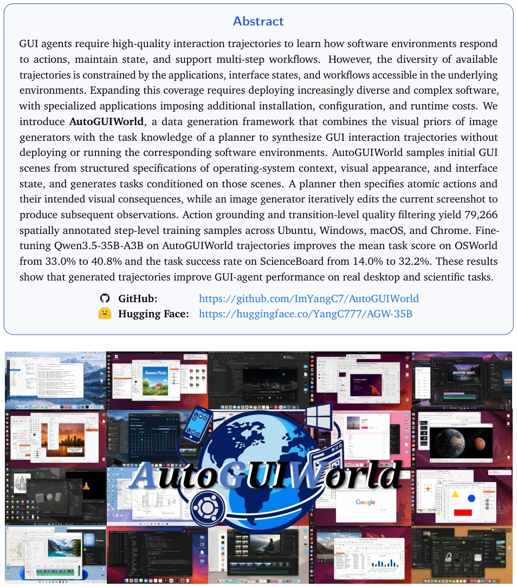
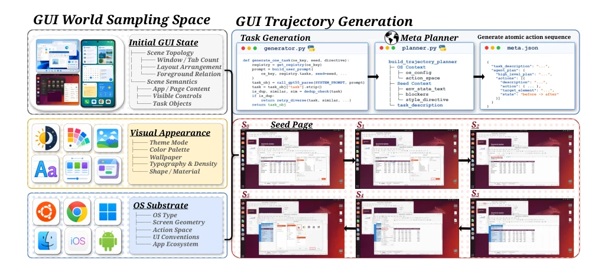
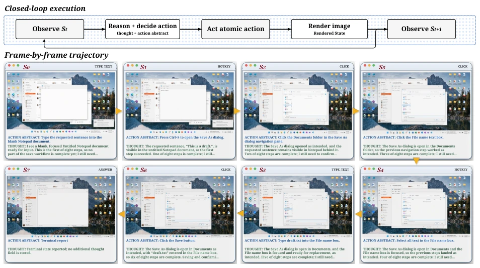
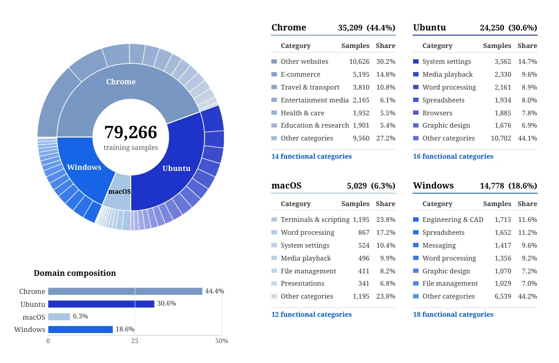
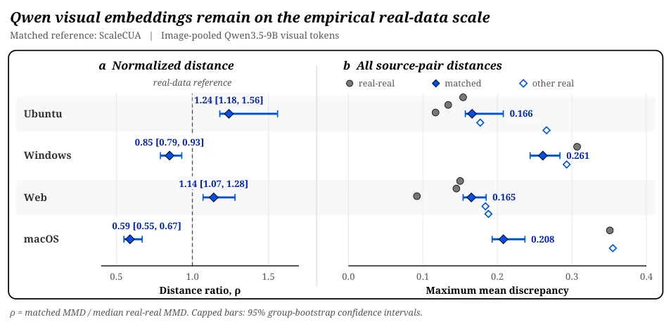
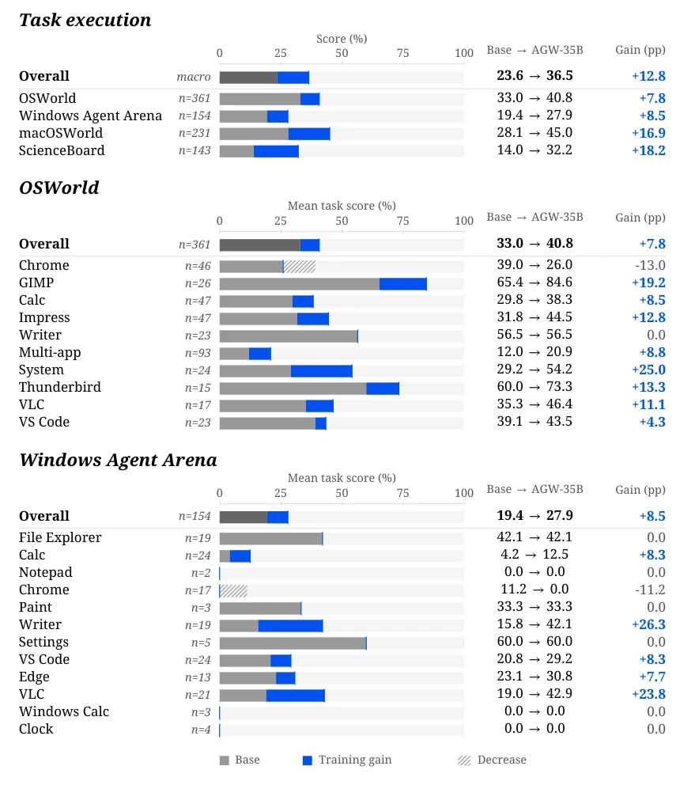
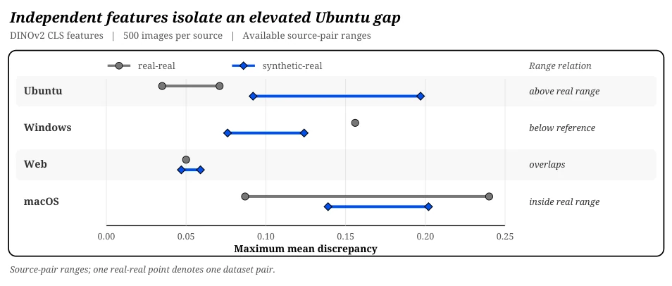
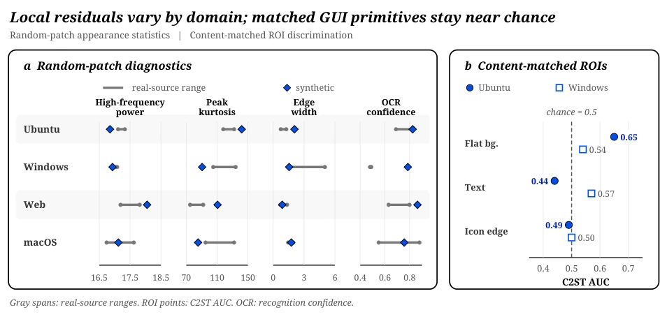
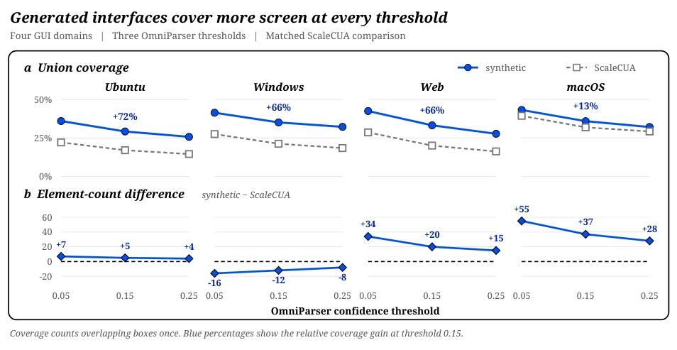
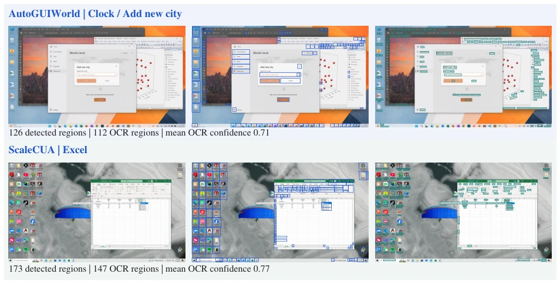

AutoGUIWorld attempts to replace "real deployment" with "generative hallucination", simulating GUI interaction using image generators to eliminate the trouble of installing software. Although the generated 79,000 trajectories caused Qwen3.5 scores to surge significantly on benchmarks such as OSWorld, one must admit that this is essentially using the visual priors of generative models to fill the voids of real environments. Although visual alignment is performed well, the performance drop in the Chrome domain exposes the gap between generated data and real interaction. This "environment-free training" sounds appealing, but do the generated interface states truly conform to logic? For instance, after a dialog box blocks a document, is the document still present? The paper claims Image2 can handle this, yet visual residuals in the Ubuntu domain remain obvious. Overall, this is a successful "data distillation", but do not expect it to completely replace fine-tuning in real environments, after all, no matter how powerful the generator is, it cannot simulate real system crashes or network latency.
GUI agents require high-quality interaction trajectories to learn environment responses and state maintenance, but existing data collection is constrained by the diversity of underlying environments. Expanding coverage requires deploying complex software, involving installation, configuration, and runtime costs, particularly professional applications such as CAD or scientific computing software [1], [9]. Existing collection methods rely on human demonstrations [7], [33], automated exploration [38], [48], or extracting tutorial videos [26], [59], and their coverage remains bound to executable software environments or interfaces in existing records. Although generative methods can build executable environments [41], [46] or simulate observations [8], [45], converting the visual priors of pre-trained image generators into training trajectories requires ensuring observations follow expected actions and maintain context [13]. Pure visual rationality is insufficient to establish these attributes; generated screenshots also require corresponding action coordinates to provide spatial supervision. Therefore, it is crucial to research how to utilize task planning and transition-level quality control to enable pre-trained image generators to become practical training data sources for GUI agents in real environments.

Figure 1 | Overview of AutoGUIWorld as an environment-free GUI data engine. It samples a structured GUI world, realizes a seed screenshot, plans action-conditioned transitions, and uses Image2 as a visual world model to synthesize coherent screenshot-action-screenshot trajectories.
AutoGUIWorld adopts a planner-guided visual world model data engine architecture. First, initial states are sampled from the structured GUI world space, including OS base, visual appearance, and initial interface state, ensuring controllable diversity. Next, Image2 renders structured states into seed screenshots, serving as trajectory root nodes. The task generator generates instructions based on seeds, avoiding referencing non-existent applications. The core lies in planner-guided trajectory expansion: Meta Planner generates atomic action sequences and descriptions of expected visual changes; Voyager observes the current screenshot, combining planned actions to generate rendering prompts; Image2, acting as a visual world model, edits and generates the next frame based on the current screenshot and prompts. This mechanism, which separates semantic planning from visual state transition, ensures the temporal coherence of trajectories. Action targets are mapped to coordinates via LocateAnything, providing spatial supervision. Finally, a training set containing 79,266 samples is constructed, covering Ubuntu, Windows, macOS, and Chrome, supporting supervised fine-tuning without the generator participating in training.

Figure 2 | Overview of AutoGUIWorld. The method first samples a structured GUI world from an OS substrate, visual appearance space, and initial GUI state space. It then realizes a seed screenshot, generates seed-conditioned tasks, plans atomic actions, and rolls out a clean sequence of GUI visual states using Image2 as a visual world model.

Figure 3 | Voyager-guided closed-loop rendering. At each step, Voyager observes the current GUI image and receives the planned action. It produces a first-person thought, an action abstract, and an after-action rendering prompt. Image2 uses the current image as an image-to-image reference and renders the next GUI state, which is returned to Voyager for the next iteration. The bottom trajectory shows how one planned action sequence becomes a temporally consistent chain of rendered GUI states.
The paper constructed 79,266 training samples on Ubuntu, Windows, macOS, and Chrome, and evaluated on OSWorld, macOSWorld, Windows Agent Arena, ScienceBoard, and ScreenSpot-Pro. The fine-tuned AGW-35B model improved task scores on OSWorld from 33.0% to 40.8%, and ScienceBoard success rate jumped from 14.0% to 32.2%. Visual alignment analysis shows that the distance between synthetic data and real data (ScaleCUA) in the Qwen feature space is comparable to the difference between real data (ρ 0.59-1.24), but obvious visual residuals exist in the Ubuntu domain. Regarding interface complexity, synthetic data covers more screen area under OmniParser detection. However, performance declined in the Chrome domain on OSWorld and WAA, indicating a generalization bottleneck for generated data in specific web interactions. Comparing AgentNet training curves demonstrates the effectiveness of AutoGUIWorld data.

Figure 4 | Distribution of the AutoGUIWorld training set. The inner ring shows 79,266 training samples across Chrome, Ubuntu, Windows, and macOS. The outer ring and accompanying tables summarize the functional-category composition within each environment.

Figure 5 | Distribution alignment in the Qwen3.5-9B visual-token space. Panel a reports the matched synthetic–ScaleCUA MMD normalized by the median real–real MMD; horizontal bars give group- bootstrap 95% confidence intervals and 𝜌= 1 marks the empirical real-data scale. Panel b shows every available real–real distance, the matched synthetic–ScaleCUA estimate with its interval, and synthetic distances to the remaining real sources.

Figure 10 | Task execution scores for Qwen3.5-35B-A3B and AGW-35B (checkpoint 469), with all OSWorld and WAA domains. The top Overall averages the four benchmark scores equally. Within each benchmark, Overall averages task scores, retaining partial credit on OSWorld and WAA. Gray shows base scores, blue shows gains, and hatching marks decreases. Blue ticks mark AGW-35B scores. 𝑛counts tasks, and gains are computed before rounding.
其他图片Other Figures

Figure 6 | Exploratory DINOv2 MMD using 500 images per source. Gray and blue spans collect the available real–real and synthetic–real source-pair distances within each domain; single available comparisons appear as points. Ubuntu is the only domain whose synthetic–real range lies wholly above the observed real–real range.

Figure 7 | Low-level appearance and generation-residual diagnostics. Panel a places each synthetic random-patch statistic against the range of real sources in the same domain; the gray spans show real-source ranges, and OCR denotes recognition confidence. Panel b reports content-matched ROI C2ST AUC; 0.5 is chance. Text and icon patches remain near chance, while Ubuntu flat backgrounds retain the clearest residual.

Figure 8 | Static interface complexity across OmniParser confidence thresholds. Panel a compares the rasterized union coverage of synthetic and ScaleCUA screenshots; the annotated percentage is the relative gain at the middle threshold, 0.15. Panel b reports the element-count difference, synthetic minus ScaleCUA. Coverage is higher in all twelve comparisons, including Windows where the detector returns fewer synthetic elements.

Figure 9 | Element detection and OCR examples on Windows interfaces. Each row shows the same full-screen view without annotations, with blue OmniParser boxes at confidence threshold 0.15, and with teal OCR regions. Row summaries report full-image counts and mean OCR confidence.